How the hexapod works
Start at the top for the big picture, then follow a command through the robot, its states and controls, the way it walks, and what keeps it safe. Each diagram is a separate SVG file in this folder; open one on its own to zoom in.
The whole robot at a glance
What each part does and how the parts talk to each other.
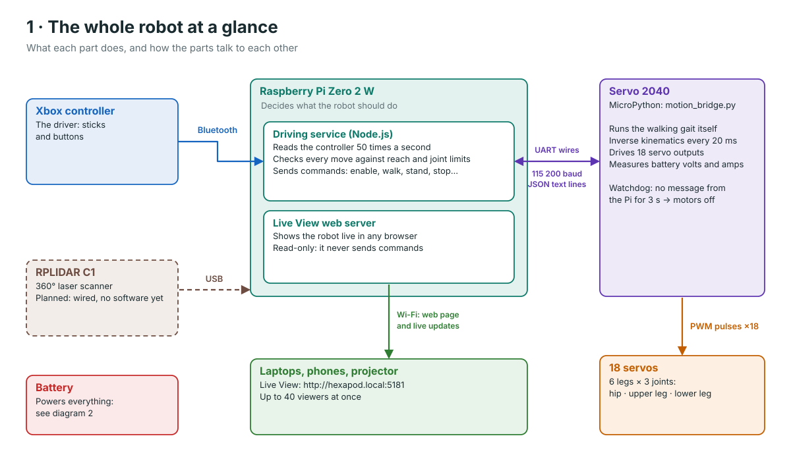
- The Pi decides what to do; the Servo 2040 does the fast, precise work of moving 18 servos.
- The Pi does not move individual servos. It sends short text commands such as "walk" or "stop" over three wires.
- The Live View only watches. Nothing in a browser can drive the robot.
Power: two supplies from one battery
How the battery feeds the servos, the Pi and the Servo 2040.
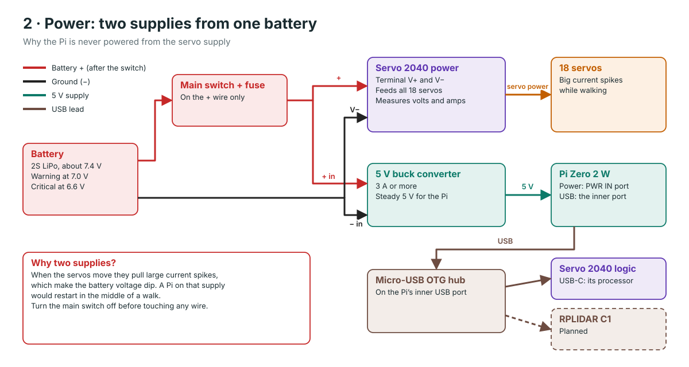
- The servos take their power straight from the battery; the Pi gets its own steady 5 V from a buck converter.
- The Servo 2040 processor is powered by USB from the Pi, so it stays on when the servo power dips.
- The switch and fuse sit on the + wire only; all grounds are joined.
Where the software runs
The programs on the Pi and on the Servo 2040, and how they connect.
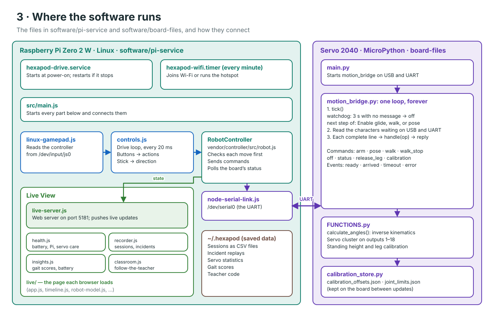
- Two services start by themselves on the Pi: the driving service and the Wi-Fi manager.
- Inside the driving service, main.js connects the parts: controller → drive loop → RobotController → serial link.
- On the board, one loop does everything: watchdog, the next movement step, then reading new commands.
The journey of one command
What happens between pushing the stick and the legs moving.
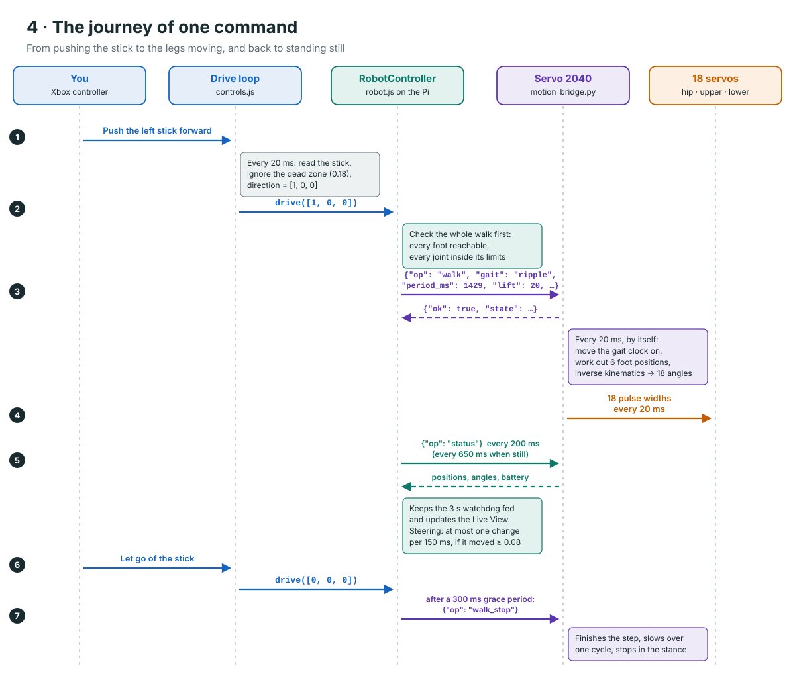
- The Pi checks the whole walk before sending it, using the same maths as the board.
- After one "walk" command the board walks on its own, recalculating every leg 50 times a second. The Pi only steers.
- The regular "status" question keeps the board’s 3-second watchdog happy and feeds the Live View.
What the robot can be doing
The robot’s states and what moves it from one to the next.
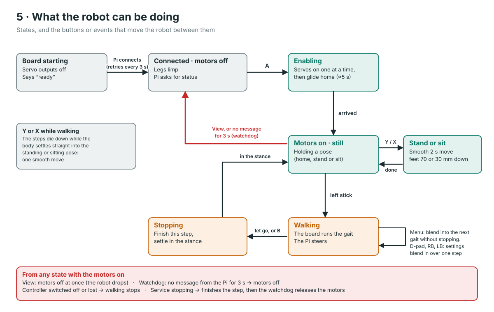
- Every power-up starts with the motors off; A (Enable) is always the first button.
- Stopping is gentle: the robot finishes its step instead of freezing with a leg in the air.
- View and the watchdog are the two ways to cut the motors at once, from any state.
The controller
What every stick and button does, and the walk settings they change.
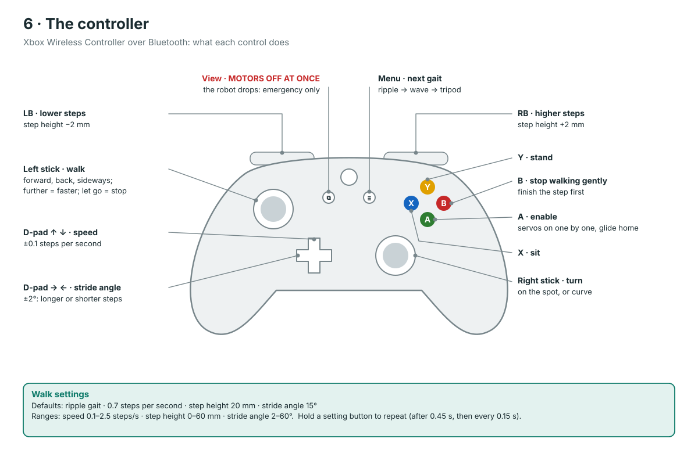
- Pushing the left stick further makes the robot walk faster; letting go stops the walk.
- The setting buttons repeat while held, and while walking the board blends each change in.
- View is the emergency stop: the motors switch off at once and the body drops.
The three gaits
Which legs are in the air at each moment of the walking cycle.
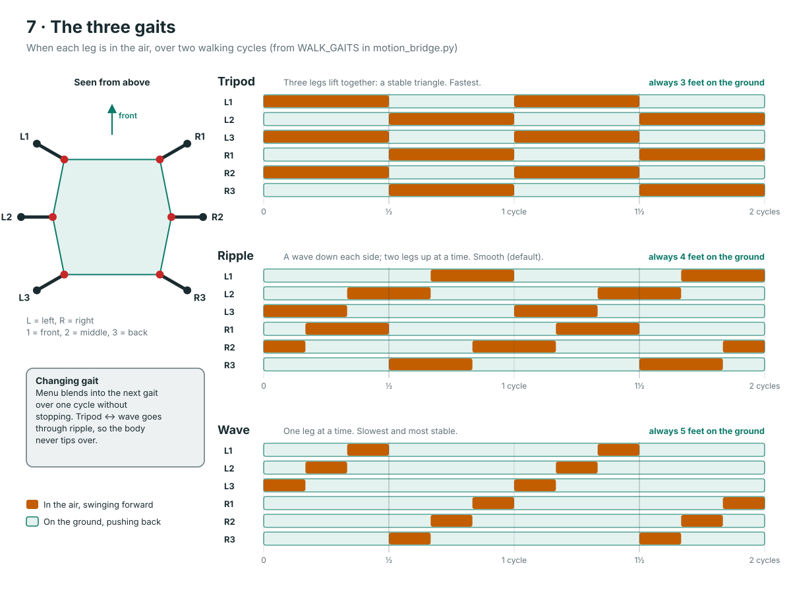
- Each bar is one leg lifting and swinging forward; the rest of the time that foot is pushing on the ground.
- Tripod always has 3 feet down (fastest), ripple 4 (smooth, the default), wave 5 (slowest, most stable).
- One cycle takes 1 ÷ speed seconds: 1.43 s at the default 0.7 steps per second.
One foot, one step
The path a single foot follows during one walking cycle.
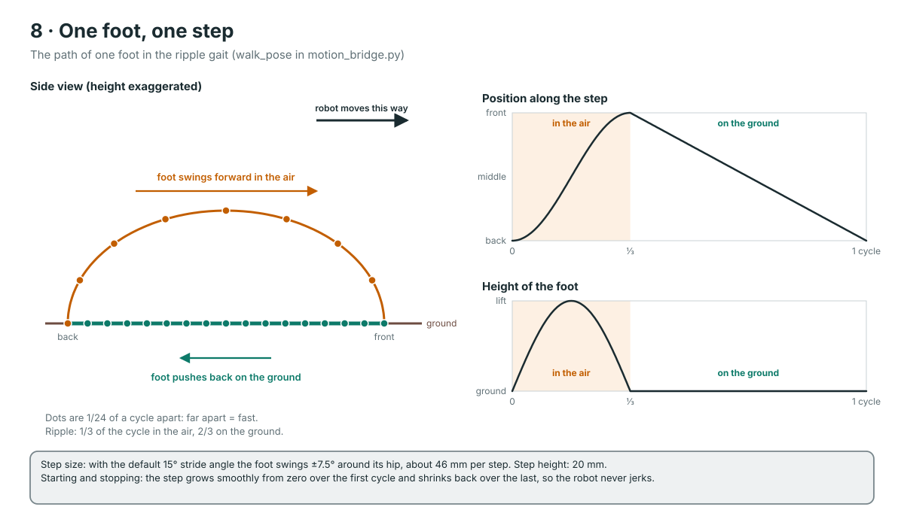
- In the air the foot speeds up and slows down smoothly (a cosine curve); on the ground it moves at a steady speed.
- The feet on the ground all push back at the same speed, which carries the body forward.
- A walk starts and ends gently: the step grows from nothing over the first cycle and shrinks over the last.
One leg: inverse kinematics
How the board turns “put this foot here” into three servo angles.
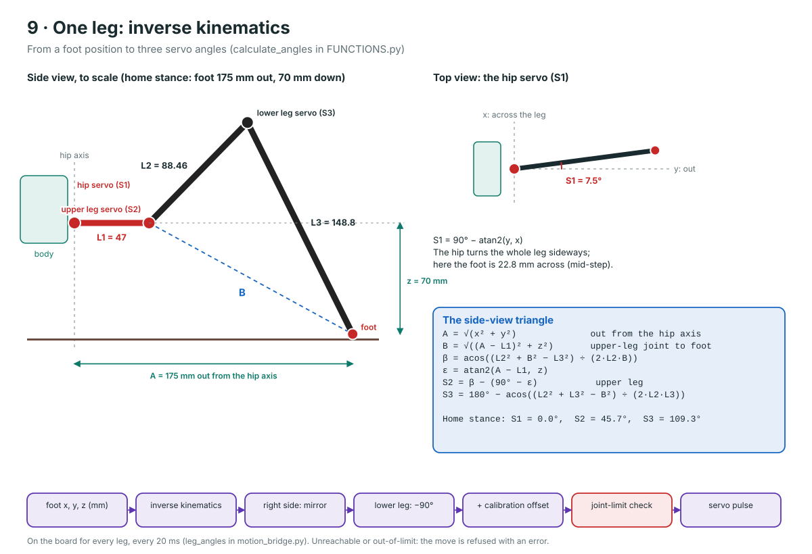
- The gait only says where each foot should be (x, y, z in mm). Inverse kinematics finds the joint angles that put it there.
- The hip angle comes from the top view; the other two come from one triangle in the side view (the law of cosines).
- A foot that cannot be reached, or an angle outside a joint’s limits, is refused with an error rather than attempted.
Layers of safety
Every check between the controller and the motors, and where it runs.
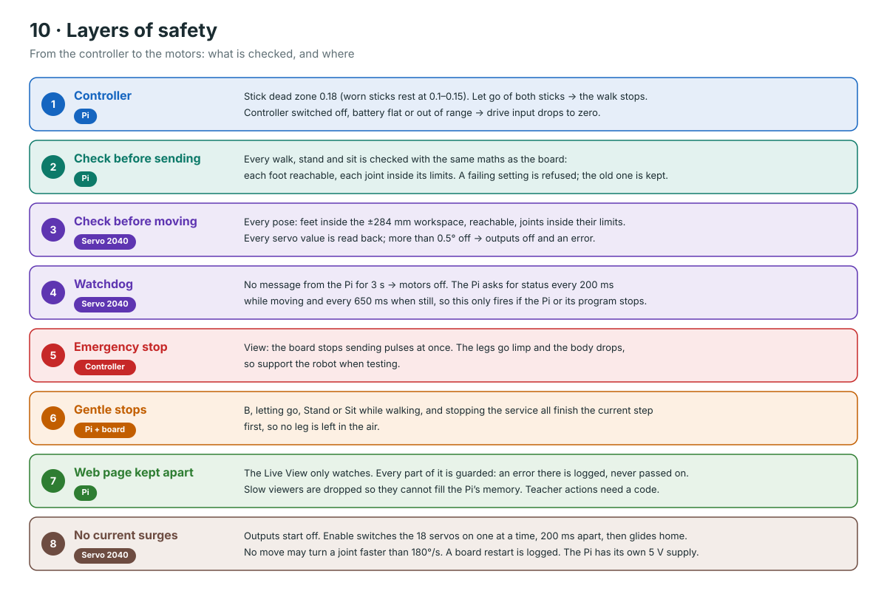
- Moves are checked twice: on the Pi before sending, and again on the board before moving.
- If anything goes quiet (the controller, the Pi, the Wi-Fi), the robot stops rather than carrying on.
- The Live View is kept away from driving: a fault in the web page cannot stop or steer the robot.
Wi-Fi: joined or hotspot
How the robot stays reachable with or without a network.
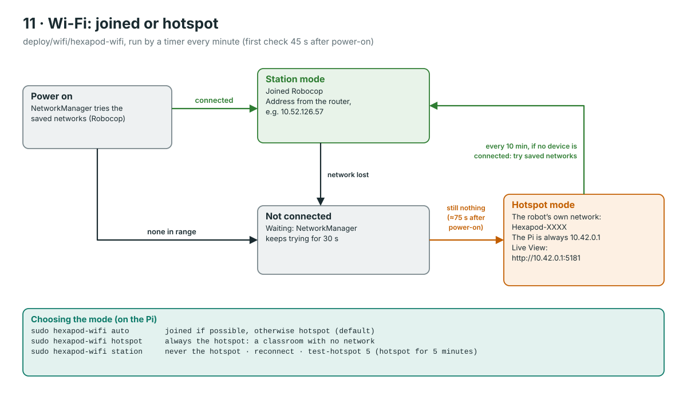
- At work the Pi joins Robocop like any laptop; elsewhere it becomes its own Wi-Fi network after about 75 seconds.
- The Pi has one Wi-Fi radio, so it is either joined or a hotspot, never both.
- On the hotspot the Pi is always at 10.42.0.1, so the Live View address never changes there.
How the Live View works
From the robot to every browser, and how the page draws smooth motion.
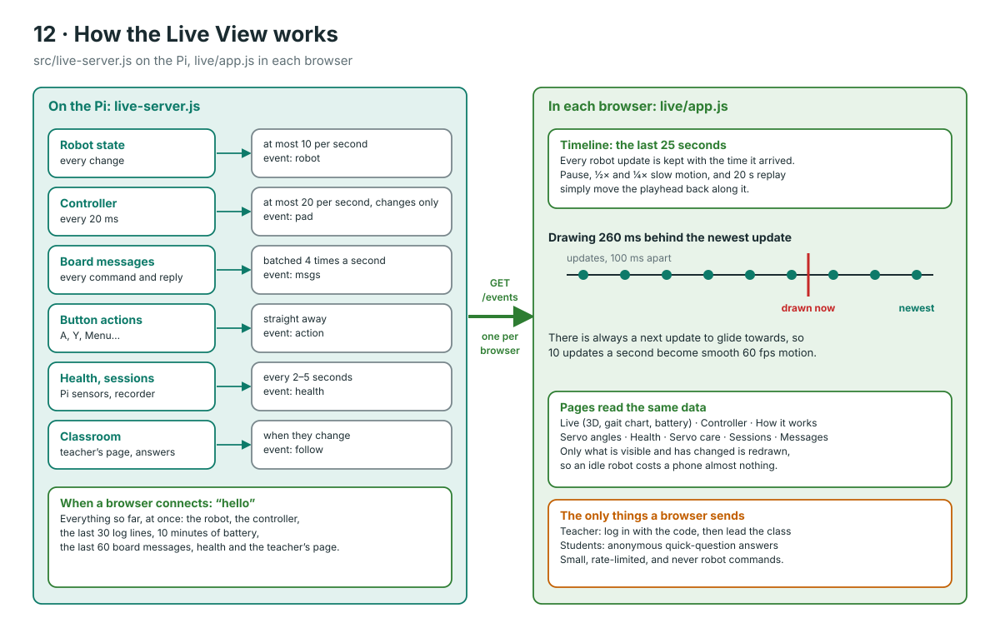
- The Pi pushes updates down one long-lived connection per browser (Server-Sent Events); browsers never ask the robot to do anything.
- Updates are limited (robot 10 per second, controller 20) so 40 viewers do not slow the robot down.
- The page draws a quarter of a second in the past, so it always has the next position to glide towards: smooth motion, pause and replay.